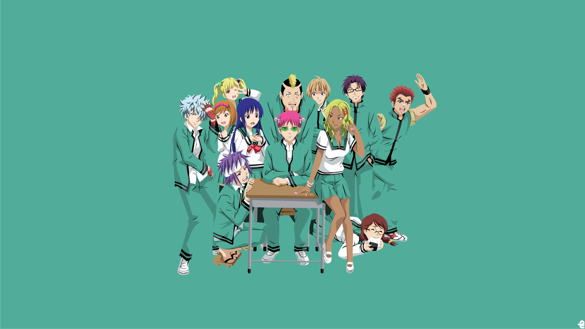

<DOCTYPE html>
<html lang = "ja">
<head>
<meta charset="utf-8">
<meta name=”viewport” content=”width=device-width,initial-scale=1.0″>
<title>斉木楠雄のΨ難</title>
<link rel="stylesheet" href=saiki.CSS">
<style>


</style>
</head>
<body>

<h1 align="center">あらすじ</h1> 
<br><h2  align="center"> 
<br>高校1年生の斉木楠雄は生まれつきの超能力者で、自身が超能力者であることが
<br>ばれないように目立つ事を避けて生活していた。財布を盗んだ犯人と決めつけられて
<br>いた燃堂力を助けたことをきっかけに、彼に気に入られて相棒と言われるようになる。
<br>公園で、マジックショーをやっていたイリュージョニスト蝶野雨緑は、斉木の超能力を
<br>イリュージョンと勘違いし、蝶野から師匠として慕われる。ある日の休み時間に突然
<br>中二病の海藤瞬に話しかけられ、彼からも気に入られる。</br>
</body>




</html>